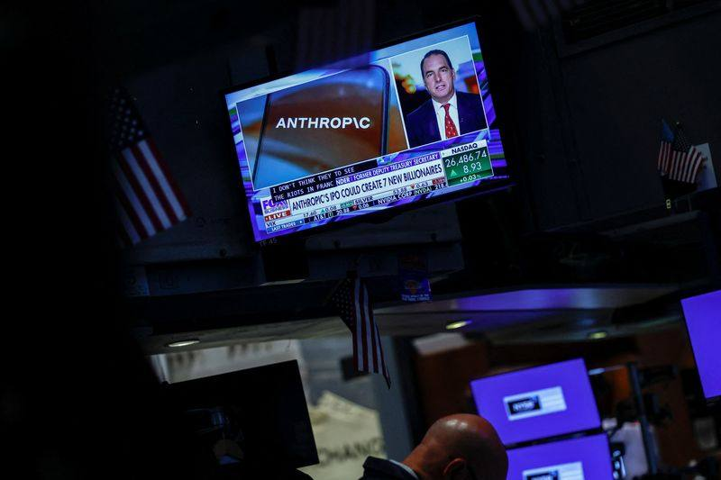

Anthropic IPO Roadshow in Doubt as Investors Balk at $1.5T Valuation
Reuters reported on November 5 that potential Anthropic IPO investors doubt the roadshow can proceed next week in time for a November listing, with the discussed $1.5 trillion valuation viewed as the high end; the Wall Street Journal separately reported investor skepticism on the $1.5 trillion figure.

- 01THE REPORT — Reuters reported on November 5 that potential investors doubt Anthropic can proceed with its planned roadshow next week in time for a November listing, with the $1.5 trillion valuation viewed as the high end.
- 02THE CORROBORATION — The Wall Street Journal separately reported investor skepticism that Anthropic can achieve a $1.5 trillion valuation; Anthropic declined to comment, and investors await the October revenue figure left blank in the updated S-1.
- 03THE WATCHPOINT — Whether the roadshow starts the week of November 9 as planned, whether the October revenue figure steadies the valuation debate, and whether the offering is delayed if tech stocks stay under pressure.
WHAT HAPPENEDWhat Happened
Potential investors in Anthropic's highly anticipated IPO are raising doubts about whether the company can proceed with its planned roadshow next week in time for a November listing, Reuters reported on November 5, 2026, citing four people familiar with investor discussions. Investors are pushing for a more attractive valuation to commit to the offering, with some viewing the recently discussed $1.5 trillion valuation as being at the high end of expectations.
The roadshow was initially expected to kick off the week of November 9, with pricing expected the following week, according to Reuters' earlier reporting. The Wall Street Journal reported on Thursday evening that IPO investors are skeptical Anthropic can achieve a $1.5 trillion valuation in a public listing. Anthropic declined to comment. Investors are also awaiting Anthropic's October revenue figure, which the company left blank in its updated S-1 filing, to assess whether growth recovered after a slowdown. At one point this year, investors expected the IPO to take place in October and to seek a valuation as high as $2 trillion.
WHY IT MATTERSA valuation cut before the roadshow even starts
A $1.5 trillion valuation is already a step down from the roughly $2 trillion figure that circulated for months, and investors are now treating even that level as the high end. The pushback follows the sharpest technology selloff in a year and the amended filing's disclosure of about $895.4 billion in compute and infrastructure commitments, which gives buyers leverage to demand a discount.
The leverage runs both ways. Anthropic needs to raise capital, carries a record of quarterly losses, and has made large commitments to partners in the AI buildout. Investors know the company has to come to market, and that knowledge is now priced into the negotiation before a single roadshow meeting has happened.
WHY IT MATTERSTiming is the real question, not just price
The doubt is not only about the number. If the market for AI-related assets remains under pressure, the company could decide to delay the offering until the market looks more resilient and likely to smoothly digest an offering that is expected by some to reach $100 billion. A November listing was the plan; the plan is now conditional.
The missing October revenue figure is the near-term catalyst. It was left blank in the updated S-1, and investors are waiting on it to judge whether the third-quarter slowdown was seasonal or structural. A strong October number would steady the roadshow; a weak one would give the skeptics the last word.
SIGNAL JUDGMENT — ANALYSISThe roadshow is now a negotiation, not a formality
Tokenta Signal's judgment: the Anthropic IPO was supposed to be the market's verdict on the AI trade, and the verdict is arriving early, in the form of a valuation cut before the roadshow opens. A $1.5 trillion tag that investors already call the high end, a blank October revenue line, and a tech selloff running into the marketing window add up to a listing that is conditional, not certain. The October number is the next fact that matters; everything until then is positioning.
WHAT REMAINS UNCERTAINWhat Remains Uncertain
EVIDENCEEvidence
Reuters reported on November 5, 2026 that potential investors in Anthropic's highly anticipated IPO are raising doubts about whether the company can proceed with its planned roadshow next week in time for a November listing, citing four people familiar with investor discussions. Investors are pushing for a more attractive valuation, with some viewing the recently discussed $1.5 trillion valuation as being at the high end of expectations. The roadshow was initially expected to kick off the week of November 9, with pricing expected the following week. Anthropic declined to comment. The Wall Street Journal reported on Thursday evening that IPO investors are skeptical Anthropic can achieve a $1.5 trillion valuation. Investors are also awaiting Anthropic's October revenue figure, which the company left blank in its updated S-1 filing. At one point this year, investors expected the IPO to take place in October and to seek a valuation as high as $2 trillion. A second independent republication of the Reuters report confirms the same facts.
PRIMARY SOURCESPrimary Sources
- Reuters: AI backlash could threaten Anthropic IPO timing, potential investors say
https://www.reuters.com/world/ai-backlash-could-threaten-anthropic-ipo-timing-potential-investors-say-2026-11-05/ - Duke FM (Reuters republication): Exclusive - AI backlash could threaten Anthropic IPO timing, potential investors say
https://duke.fm/2026/11/05/exclusive-ai-backlash-could-threaten-anthropic-ipo-timing-potential-investors-say/